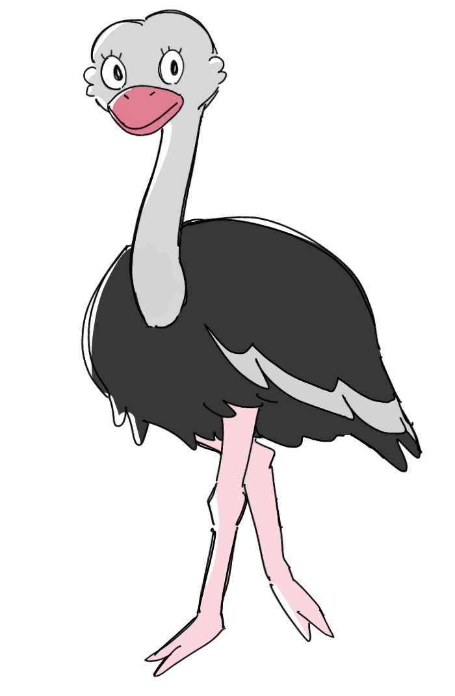

あなたはダチョウです！
うっかり度のスコアがここに表示されます。
こまり度のスコアがここに表示されます。
行動点 : 20
総合スコアがここに表示されます。

ダチョウはとっても忘れやすい動物で、群れと群れがぶつかるとメンバーが自分がどっちの群れにいたかわからなくなってしまうんだ。でも、強靭（きょうじん）な身体能力を持っていることでも知られているよ！
💡tips
それなりにあるを選んでも、対策がバッチリだったら最高ランクを狙えるよ！